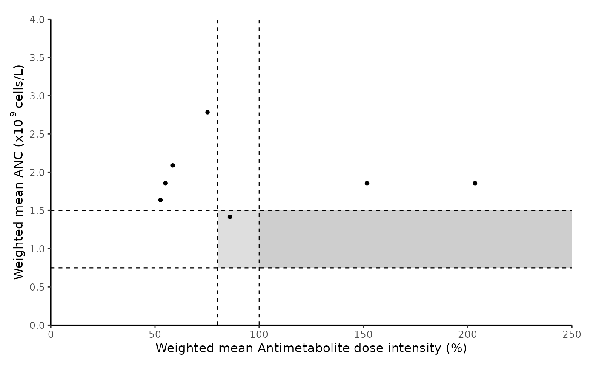
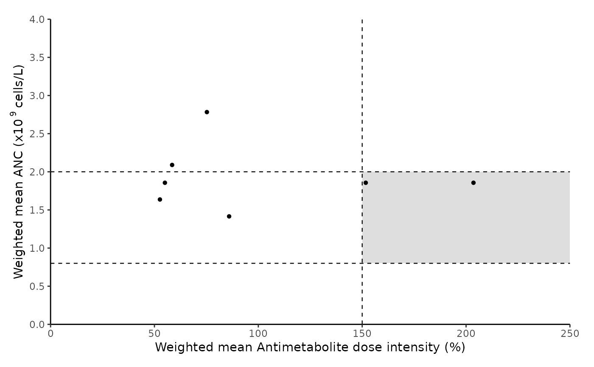
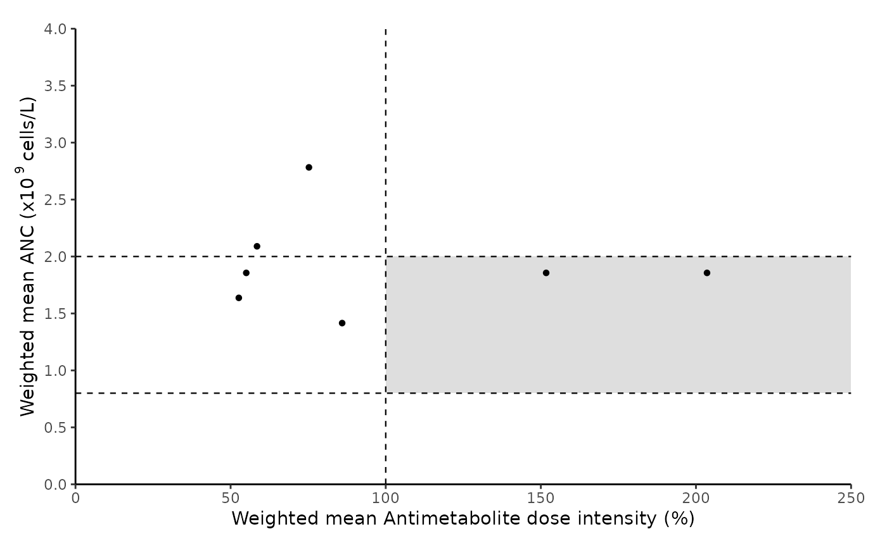

Plot summarized maintenance therapy (MT) data for a cohort
Source:R/summarize_cohortMT.R
summarize_cohortMT.RdCreate an integrated summary graph illustrating weighted mean absolute neutrophil count (ANC) and dose information for each patient in the cohort.
Arguments
- input_files_path
Path to folder with MT csv files (in quotes)
- anc_range
ANC target range as per the protocol: (c(lower threshold, upper threshold)). NOTE: Ensure that units are the same as unit of ANC in the input data.
- unit
Choose either "million" or "billion".
"million" = million cells/L (x\(10^{6}\) cells/L or cells/\(\mu\)l)
"billion" = billion cells/L (x\(10^{9}\) cells/L or x\(10^{3}\) cells/\(\mu\)l)
- dose_intensity_threshold
numeric value of reference drug dose intensity (%). (optional)
Note
If there is only one threshold for anc_range or dose_intensity_range parameters, please specify the respective value and keep the other threshold as NA. eg : c(2000, NA), c(100, NA)
Horizontal dotted lines on the graph indicate anc_range thresholds.Red dot represents summarized overall MT data.
Examples
cohort_path = paste0(system.file("extdata/processed_data/", package = "allMT"), "/")
summarize_cohortMT (input_files_path = cohort_path, unit = "billion",
anc_range = c(0.75, 1.5), dose_intensity_threshold = c(80, 100))
#> NOTE: Including all files in input folder
#> Cohort summarized MT data graph created
#> Quitting
#> Bye Bye: Did you know that the moon is drifting away from Earth :)?

# \donttest{
summarize_cohortMT(input_files_path = cohort_path,
unit = "billion", anc_range = c(0.8, 2), dose_intensity_threshold = 150)
#> NOTE: Including all files in input folder
#> Cohort summarized MT data graph created
#> Quitting
#> Bye Bye: Did you know that the moon is drifting away from Earth :)?

# As per BFM protocol (Reference PMID - 15902295):
summarize_cohortMT (input_files_path = cohort_path,
unit = "billion", anc_range = c(2, NA), dose_intensity_threshold = 150)
#> NOTE: Including all files in input folder
#> Error
#> <simpleError in if (anc_range[1] > 100 | anc_range[2] > 100) { message("Warning: Are you sure the anc_range corresponds to the selected 'unit'?")}: missing value where TRUE/FALSE needed>
#> Quitting
#> Bye Bye: Did you know that the moon is drifting away from Earth :)?
# As per St Jude protocol (Reference PMID - 15902295):
summarize_cohortMT (input_files_path = cohort_path,
unit = "billion", anc_range = c(0.8, 2), dose_intensity_threshold = 100)
#> NOTE: Including all files in input folder
#> Cohort summarized MT data graph created
#> Quitting
#> Bye Bye: Did you know that the moon is drifting away from Earth :)?

# }